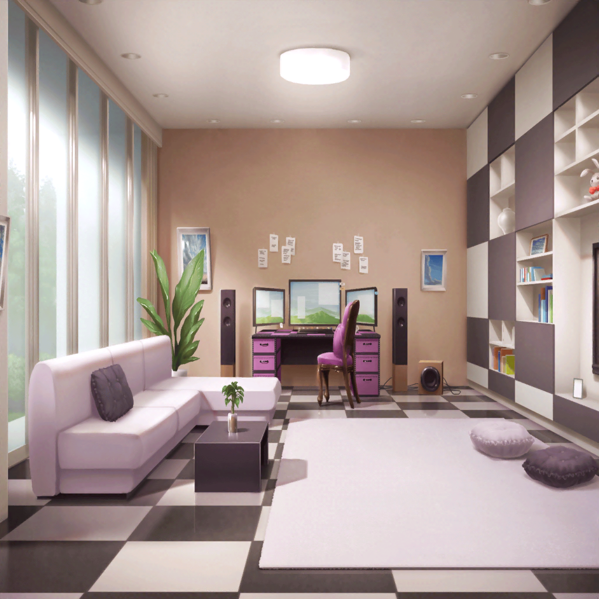

翌朝
宇田川家 リビング
あこ
そろそろ、おねーちゃん起きてくるかな？
今のうちに、朝ごはんつくっておこうっと
あこ
え、えっと、たしか……
はぐみが持ってきてくれたコロッケが残ってたでしょ？
あこ
あとは、さあやちゃんのくれた白パンがあるから、
これをトースターに入れて……
巴
おはよー
あこ
あ、おねーちゃん！
制服着てるけど、
風邪はもう大丈夫なの？
巴
ああ、もうバッチリだよ。
熱も完全に下がってたしな
あこ
よかったー♪
あ、今朝ごはんできるから待っててね！
巴
朝ご飯もあこがつくってくれたのか？
いつもは遅刻ギリギリの時間まで寝てるのに……
あこ
あこ、今日はチョー早起きだったんだもん！
目覚ましがなる前に起きちゃったんだよ！
巴
はは、本当に頼もしいな。
もしかしたら、アタシが風邪ひいてたほうが、
あこにとってはいいのかもしれないな
あこ
ええ～、やだっ！
おねーちゃんは元気じゃなきゃ、あこ、イヤだよー！
巴
あははは。
うん、ごめんごめん。冗談だよ
あこ
あ、パンが焼けたみたい！
おねーちゃん、お待たせ。
朝ごはんできたよー
巴
ん？ これは？
あこ
コロッケパン！
あこ
これも昨日みんなにもらったもので、つくったんだっ！
巴
なら、感謝して食べないといけないな。
ほら、あこも一緒に食べよう
あこ
うん！
それじゃあ、一緒に……
あこ・巴
いただきまーす！

商店街
あこ
ねえねえ、あこのつくった朝ごはん、どうだった？
巴
すごく美味しかったよ。
ホクホクのコロッケと、やわらかい白パンの組み合わせが
かなり最高だった
あこ
だよね！ あこも思った！
あこ
あ！
おねーちゃん、みんな、いるよ！
あこ
おはよ～！
沙綾
あ、おはよう
はぐみ
わわ、トモちん、めちゃめちゃ顔色よくなってるじゃ～ん♪
つぐみ
よかったね、風邪は治ったんだ？
Afterglowのみんなも心配してたよ
巴
みんなには心配かけちゃったけど、
完全に風邪は治ったよ。みんながくれた差し入れと、
ずっと看病してくれたあこのおかげでな
沙綾
あこが看病してたんだ。
すごいねー
はぐみ
ほぇ～、
あこちん、えらいじゃ～ん！
あこ
ベ、別に、
ただ普通に、料理つくったりしただけだよ～
巴
おかげさまで、アタシは妹になった気分を味わったよ
はぐみ
あこちん、かっこいい～♪
トモちんにそこまで言わすとは、やるね～！
いいな～、はぐみもあこちんみたいな妹がほしかったな！
巴
あげないよ？
アタシの自慢の妹だからね
あこ
……うん！
あこ
ま、まぁ？
あこにかかれば看病くらい余裕だよ！
あこ
なんたって、あこは……
巴
……あこは？
あこ
おねーちゃんの妹だもん！